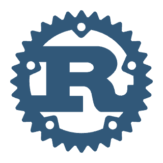
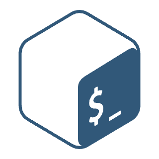
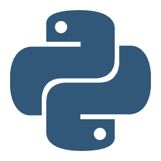
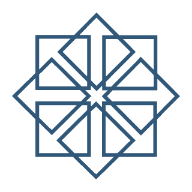
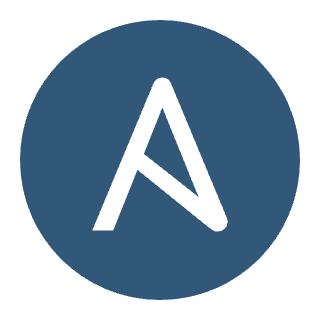
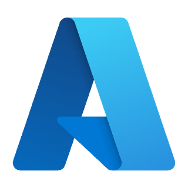

AI infrastructure. Distributed systems. Production ownership.
AI platform infrastructure and distributed systems engineer with 12 years in production. Across Apple, Freddie Mac and startup environments, I have shipped tooling, architected critical migrations and owned infrastructure from deployment through incident recovery.
Venkata GanjiAI infrastructure & distributed systems
7.0s → 1.9sApproximate vector-query latency · Apple
$500K+Combined Solr + Mac infrastructure savings · Apple
30 PBTotal Hadoop capacity operated · Amobee/Turn
THE PLATFORM / MY CONTRIBUTION
The full AI platform. The infrastructure I owned.
At Apple, through Mphasis, I owned core infrastructure and reliability capabilities within an internally engineered enterprise AI platform, and owned GPU model-serving tooling and model-weight onboarding.
Studio interfaces, API gateways, identity and authorization
OWNED / GPU SERVING & ONBOARDING
Bring models into production
Dedicated GPU-backed EKS, vLLM, tensor parallelism, memory budgets, LoRA and custom images. Model weights staged from S3 to shared storage with integrity validation.
OWNED / DATA INFRASTRUCTURE
Databases, messaging and performance
Operations across vector databases, Redis, MongoDB, Elasticsearch/OpenSearch and Kafka; infrastructure and lifecycle tooling, capacity, performance and cost optimization.
Kubernetes, GitOps/IaC and operational tooling; metrics and logs through dashboards and alerts; capacity planning, cost optimization and disaster recovery.
Python · Terraform · Ansible · Helm · GitOps
OWNED / OPERATIONAL ECOSYSTEM
Observability and operational automation
Prometheus, Grafana and Splunk; SRE portals/APIs, ingestion dashboards, probes, smart alerting, scheduled reporting, backup CronJobs and credential checks.
CO-OWNED ONBOARDING / INGESTION & DOCUMENTS
Make enterprise data usable
Connectors, parsing, PDF processing, chunking, extraction, translation and proprietary document conversion. Retry, throttled and recovery worker configurations.
Full platform view: gray shows context, blue marks owned operations, violet marks owned GPU serving, and amber marks co-owned onboarding.
Conceptual capability map, not a single request path. Ownership labels distinguish owned infrastructure and operations from co-owned ingestion, document, retrieval and agent onboarding; application implementation remains a team contribution.
Technology choices connected to the systems I built and operated.
Apple
AI platform infrastructure & model serving
Kubernetes, vector databases, model-weight onboarding, IaC and production reliability.
NVIDIA
Solr
AWS
GCP
MongoDB
K8s
Prometheus
Terraform
vLLM
Hugging Face
Helm
Argo CD
Grafana
Disaster recovery
High availability
Freddie Mac
Solutions architecture & engineering
Mission-critical migrations, Spark/Python delivery, infrastructure automation and disaster recovery.
AWS
•Disaster recovery
S3
•PingFederate
K8s
Solr
HBase
Databricks
Cyber Data Lake / Amorphic
Hardware through distributed ingestion
Supermicro servers, high-throughput NICs, IXIA, network integration and performance tooling.
•PCAP
•NetFlow
•Telemetry

Rust

Bash

Python
Supermicro
•SolrCapture
•IXIA

CentOS

Ansible
Earlier
Cloud & distributed data foundations
Cloud engineering, Hadoop/HBase operations, automation and high availability across earlier engagements.
AWS

Azure
Hadoop
Databricks
Python
Bash
Ansible
SELECTED WORK / FOUR ENGINEERING STORIES
Architecture with an operating story.
Each case connects the problem, my contribution, the system design and the outcome. Start with GenAI for AI platform roles, or explore the data and migration work underneath.
Ready to build on production vLLM experience and take on deeper inference engineering deliverables using GenAI-Perf, SGLang and LMCache.
A direction for my next role, building on production vLLM experience. These tools are not presented as completed projects or prior production experience.
My work spans application infrastructure, distributed storage and the operational details between them. I write deployment and lifecycle tooling, diagnose performance, lead migrations and stay accountable for production behavior.
At Apple, as a contractor through Mphasis, that meant ingestion, inference and model-serving infrastructure. At Freddie Mac through Cloudwick, I delivered solutions architecture, software engineering and production operations. My earlier Cloudwick work included ownership across cyber telemetry hardware, network integration, performance tooling and large distributed-data environments.
Start with the simplified architecture views, then see low-resolution previews of the original diagrams in each case study. Full-resolution originals are not offered here. Each case distinguishes my contribution, team architecture context and the scope of reported results.
 NVIDIA
NVIDIA Solr
Solr AWS
AWS GCP
GCP MongoDB
MongoDB K8s
K8s Prometheus
Prometheus Terraform
Terraform vLLM
vLLM Hugging Face
Hugging Face Helm
Helm Argo CD
Argo CD Grafana
Grafana Disaster recovery
Disaster recovery High availability
High availability